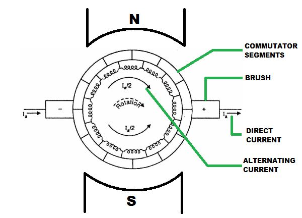
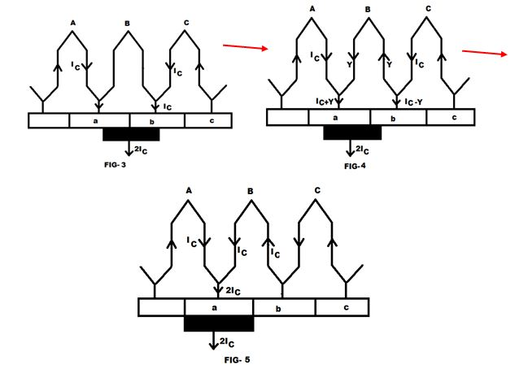

The voltage generated in the armature, placed in a rotating magnetic field, of a DC generator is alternating in nature. The commutation in DC machine or more specifically commutation in DC generator is the process in which generated alternating electric current in the armature winding of a dc machine is converted into direct electric current after going through the commutator and the stationary brushes.
Again in DC Motor, the input DC is to be converted in alternating form in armature and that is also done through commutation in DC motor.
This transformation of electric current from the rotating armature of a dc machine to the stationary brushes needs to maintain continuously moving contact between the commutator segments and the brushes. When the armature starts to rotate, then the coils situated under one pole (let it be N pole) rotates between a positive brush and its consecutive negative brush and the electric current flows through this coil is in a direction inward to the commutator segments. Then the coil is short circuited with the help of a brush for a very short fraction of time(1⁄500 sec). It is called commutation period. After this short-circuit time the armature coils rotates under S pole and rotates between a negative brush and its succeeding positive brush. Then the direction of become is reversed which is in the away from the commutator segments. This phenomena of the reversal of electric current is termed as commutation process. We get direct electric current from the brush terminal.
The commutation is called ideal if the commutation process or the reversal of electric current is completed by the end of the short circuit time or the commutation period. If the reversal of electric current is completed during the short circuit time then there is sparking occurs at the brush contacts and the commutator surface is damaged due to overheating and the machine is called poorly commutated.

Physical Concept of Commutation in DC Machine
For the explanation of commutation process, let us consider a dc machine having an armature wound with ring winding. Let us also consider that the width of the commutator bar is equal to the width of the brush and electric current flowing through the conductor is IC.
Let the commutator is moving from left to right. Then the brush will move from right to left.
At the first position, the brush is connected the commutator bar b (as shown in fig 1). Then the total electric current conducted by the commutator bar b into the brush is 2IC.
When the armature starts to move right, then the brush comes to contact of bar a. Then the armature electric current flows through two paths and through the bars a and b (as shown in fig 2). The total electric current (2IC) collected by the brush remain same.
As the contact area of the bar a with the brush increases and the contact area of the bar b decreases, the electric current flow through the bars increases and decreases simultaneously. When the contact area become same for both the commutator bar then same electric current flows through both the bars (as shown in fig 3).
When the brush contact area with the bar b decreases further, then the electric current flowing through the coil B changes its direction and starts to flow counter-clockwise (as shown in fig 4).
When the brush totally comes under the bar a (as shown in fig 5) and disconnected with the bar b then electric current IC flows through the coil B in the counter-clockwise direction and the short circuit is removed.
In this process the reversal of electric current or the process of commutation is done.


 by
by